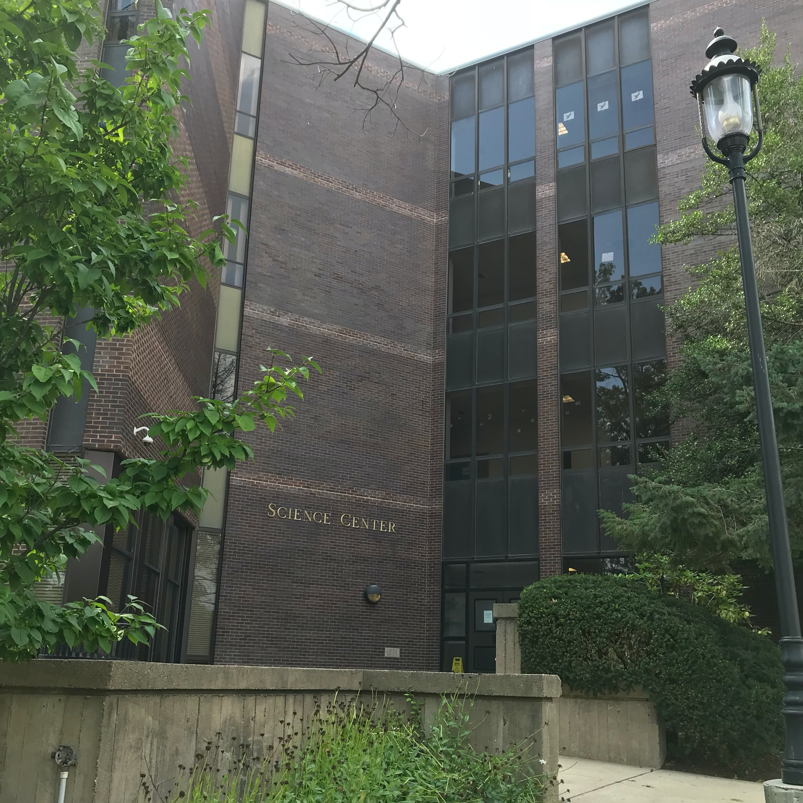

Science Center, Saint Joseph's University
I began working in the Physics Department at Saint Joseph's University in Philadelphia, PA, during the summer of 2017, the summer between my sophmore and junior years of high school, with the Chair of the department, Dr. Piotr Habdas, PhD. Under Dr. Habdas' guidance, and originally working with another high school student, I was tasked with revising a paper entitled "Measuring Impulse of Sudden Impacts on Foams with Varying Elasticity". This was the continuation of a project which had been worked on by a previous undergraduate in the department. A pedagogical paper had been produced and submitted to The Physics Teacher journal. The paper was sent back with comments. It was my job to sort through those comments and make the necessary changes in order to prepare the paper for resubmission to the journal.
The goal of the project was to investigate the relationship between the elasticity of foams and the impulse measured during collisions with a blunt object. As a pedagogcial paper, the ultimate goal for the paper was to inform a lesson plan for physics teachers in which students would acquire an empirical understanding of momentum and impulse concepts. The experiment was made possible using a custom-built "guillotine" apparatus on which a Vernier wireless force sensor slid on well-lubricated linear slides, closely replicating free fall. Data was generated by dropping the force sensor on foam samples of varying elasticity, measured in Young's modulus, from varying heights. Using this data, a series of graphs were generated which compared values such as drop height, average impulse, Young's modulus, maximum force and impact duration.
Experimental Apparatus
My colleague, Alex, and I, 2017
Working through and addressing the reviewer's comments entailed everything from cropping photos in the paper to questioning and rethinking entire premises of the paper. Working closely with Dr. Habdas, my colleague and I ran tests to confirm that the experimental apparatus was working properly and suggested and implemented edits to the manuscript to prepare it for resubmission. After a great deal of work, the paper was submitted. It was once again returned with comments, although in the second round, there were far fewer.
Over the next two summers, 2018 and 2019, I returned to Saint Joseph's University to finish the work I had started. Now on my own, but still under the guidance of Dr. Habdas, I took it upon myself to question and confirm the claims made in the paper and to back them up with more rigorous evidence than had been collected and presented previously. I applied knowledge and skills I had learned in my classes, including utilizing MATLAB to manipulate the large datasets generated by the experiements. I developed new testing setups in attempts to isolate key variables and idealize the procedure. I also implemented a new force sensor, which was purchased by the department in order to collect finer data. The result was better statistical evidence and more rigorous models which sured up the cracks in the original manuscript. The paper was resubmitted to the journal and is currently pending publication, with my name as lead author.
Another Experimental Setup
A Day in the Lab
Overall, my experience at Saint Joe's was formative in my introduction to academia and rigorous scientific research. I was introduced to scientific paper writing, the peer review process, and working in a laboratory environment. I was able to apply my physics knowledge to a real application and exercised my problem solving and communication skills to understand, correct, and address the reviewers' comments. I also got some experience in manipulating large datasets, reducing error, and working with force sensors, something that would be useful later in my research in aerodynamics at Boston University.